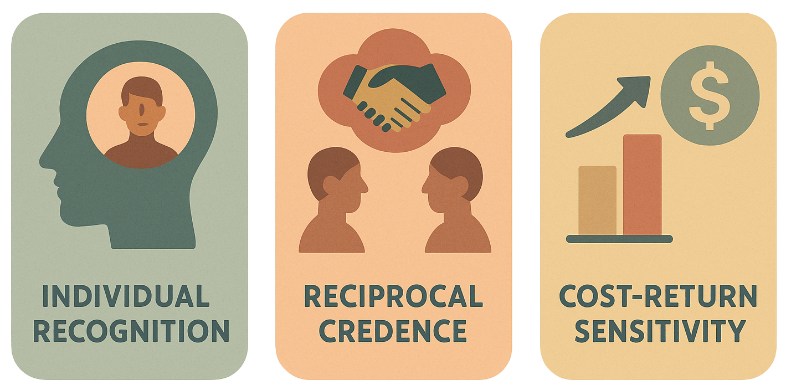

Early Societies
Reciprocity operated as a biological social behavior—holding early communities together through memory,
obligation, and bonds, rather than barter.
Chimpanzees
Reciprocity is robust: grooming, food sharing, and coalition support are exchanged based on past
interactions and bonds.
Developmental Psychology
Infants display reciprocity spontaneously—tracking helpers, remembering favors, and expecting returns
without instruction.
For centuries, the story of economics has been told through barter: people without money trading goods directly, and from this, markets and money supposedly emerged.
But think about your own life. When you don’t use money with friends, family, or colleagues, you almost never barter. You don’t trade an apple for a banana. Instead, you help, share, and rely on reciprocity over time.
This is the real root of exchange: not isolated swaps of value, but social interaction—recognition, memory of relationships, and expectations of return.
This project reframes economics from the ground up: not as an abstract system of transactions, but as a cognitive and social behavior.
Early human societies were not held together by barter. They were sustained by reciprocity—giving, returning, and remembering. Exchange was bound up with memory and social ties: who helped you before, who you owe, and what kind of relationship you share. This is not abstract calculation; it is biological behavior.
Crucially, reciprocity is not unique to humans. Many animals—from chimpanzees to monkeys and even bats—show reciprocal helping and exchange-like interaction. In controlled experiments, nonhuman primates exhibit the same kinds of economic biases seen in humans:
These continuities show that the foundations of economics are not invented institutions, but shared biological behaviors that long predate markets and money.
The origins of economic behavior remain unresolved—not only in the social sciences but also in AI, where dominant theories often rely on predefined incentives or institutional assumptions. Contrary to the longstanding myth of barter as the foundation of exchange, converging evidence from early human societies suggests that reciprocity—not barter—was the foundational economic logic, enabling communities to sustain exchange and social cohesion long before formal markets emerged.
Yet despite its centrality, reciprocity lacks a simulateable and cognitively grounded account. Here, we introduce a minimal behavioral framework based on three empirically supported cognitive primitives—individual recognition, reciprocal credence, and cost--return sensitivity—that enable agents to participate in and sustain reciprocal exchange, laying the foundation for scalable economic behavior. These mechanisms scaffold the emergence of cooperation, proto-economic exchange, and institutional structure from the bottom up.
By bridging insights from primatology, developmental psychology, and economic anthropology, this framework offers a unified substrate for modeling trust, coordination, and economic behavior in both human and artificial systems.


Despite centuries of theory, the true origin of economic exchange remains underspecified. Most models assume institutions, utility, or symbolic trust—but say little about how these systems emerge from real social behavior.
This missing foundation isn’t just a theoretical gap. It prevents us from building artificial agents that behave socially in a stable, scalable way. Without grounding in memory, expectation, and behavioral payoff, trust becomes just a label, not a mechanism.
By modeling exchange as something that emerges from basic cognitive capacities—not something imposed by rules—we open a new path for simulating how institutions form, rather than assuming they already exist.
This framework is designed to be simulateable from the ground up. Each of the three cognitive primitives—recognition, credence, and cost–return sensitivity—can be implemented as modular memory functions in LLM-based agents.
Rather than relying on reinforcement learning or hardcoded rules, agents can be equipped with identity tracking, scalar expectations, and cumulative cost-return logs to support adaptive reciprocity over time.
These components can be layered into existing multi-agent systems via structured memory and prompt-level reasoning—enabling scalable simulations of how social exchange and institutions emerge from simple cognitive building blocks.
@misc{diau2025cognitivefoundationseconomicexchange,
title={The Cognitive Foundations of Economic Exchange: A Modular Framework Grounded in Behavioral Evidence},
author={Egil Diau},
year={2025},
eprint={2505.02945},
archivePrefix={arXiv},
primaryClass={cs.CY},
url={https://arxiv.org/abs/2505.02945},
}